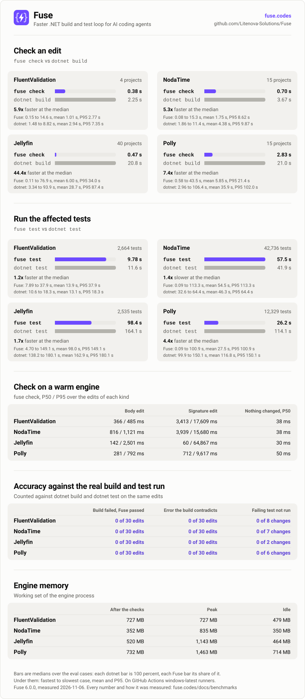

Docs / Understand
Benchmarks
On four open-source repositories, Fuse 6.0.0 checked an edit 5.3x to 44.4x faster than dotnet build at the median. Over all 30 edits of each repository, it took 2.5x to 6.1x less time than the build. It ran the affected tests 1.2x to 4.4x faster than dotnet test on 3 of the 4. On NodaTime, where most tests run and one project goes through MSBuild, it ran them 1.4x slower. It reported no edit as clean that the build failed, and it missed 3 compiler errors in 120 generated cases (161 edits). Test selection missed no failing test in the 40 selection cases.
Compared with the 5.7.0 result files beside these, 6.0.0 is not faster on every measurement, and this page says so where it is not. Warm body-edit P95 is slower on all 4 repositories, Polly's post-edit P95 most plainly (792 ms against 247 ms), and signature-edit P95 is slower on all 4 as well. Cold checks are faster on FluentValidation and Polly and slower on NodaTime and Jellyfin. Engine memory is higher on Polly, at a 1,463 MB peak and 714 MB once idle against 1,091 MB and 504 MB in 5.7.0. Attribution with sessions is faster on FluentValidation, NodaTime and Jellyfin and slower on Polly. Selection missed no failing test, where 5.7.0 missed 1 on Polly.
This page is for anyone who is deciding whether to rely on Fuse, and for contributors who are comparing a change with the published numbers.
After reading it you know how fast and how accurate Fuse was, which repositories it ran on, how far the times spread, and where each number comes from. Evals explains how the suites produce the numbers and how you reproduce them.
These benchmarks measure 4 repositories: FluentValidation, a validation library and the small one of the 4; NodaTime, a date and time library; Jellyfin, a media server; and Polly, a resilience library. The evals in evals/Fuse.Evals run the fuse executable the way an agent does. They compare every answer with a real dotnet build or dotnet test. Each job ran on its own GitHub Actions windows-latest runner with 4 logical processors and 16 GB of memory, and that runner ran nothing else (Evals). On Windows x64 the fuse command is the native client, so that is what the evals measure.

Speed and accuracy #
A warm check runs against an engine that is already running with the edited project loaded. A body edit changes the inside of a method. A signature edit renames a method. Fuse then also checks the dependent projects that use the renamed method. Reading the numbers explains P50 and P95.
| Benchmark | FluentValidation | NodaTime | Jellyfin | Polly |
|---|---|---|---|---|
| Size | 4 projects, 2,664 tests | 15 projects, 42,736 tests | 40 projects, 2,535 tests | 15 projects, 12,329 tests |
Check an edit: fuse check vs dotnet build, median | 0.38 s vs 2.25 s (5.9x) | 0.70 s vs 3.67 s (5.3x) | 0.47 s vs 20.8 s (44.4x) | 2.83 s vs 21.0 s (7.4x) |
Check an edit: fuse check vs dotnet build, total over the 30 cases | 30.4 s vs 88.1 s (2.9x) | 52.4 s vs 131.3 s (2.5x) | 180.1 s vs 860.9 s (4.8x) | 175.4 s vs 1,075.8 s (6.1x) |
| Warm check after a body edit, P50 / P95 | 366 / 485 ms | 816 / 1,121 ms | 142 / 2,501 ms | 281 / 792 ms |
| Warm check after a signature edit, P50 / P95 | 3,413 / 17,609 ms | 3,939 / 15,680 ms | 60 / 64,867 ms | 712 / 9,617 ms |
| Warm check of an unchanged tree, P50 | 38 ms | 38 ms | 30 ms | 50 ms |
Run the affected tests: fuse test vs dotnet test, median | 9.78 s vs 11.6 s (1.2x) | 57.5 s vs 41.9 s (1.4x slower) | 98.4 s vs 164.1 s (1.7x) | 26.2 s vs 114.1 s (4.4x) |
Share of tests run by fuse test | 99.9 percent | 79.7 percent | 22.3 percent | 1.5 percent |
| Compiler errors missed | 0 in 30 cases | 1 in 30 cases | 1 in 30 cases | 1 in 30 cases |
| Errors contradicted by the build | 0 in 30 cases | 0 in 30 cases | 0 in 30 cases | 0 in 30 cases |
| Errors Fuse reported that the build could not confirm: deferred / unverifiable | 6 / 39 | 54 / 188 | 62 / 227 | 20 / 277 |
| Test selection cases whose change made a test fail | 8 of 10 | 7 of 10 | 2 of 10 | 6 of 10 |
| Failing tests missed | 0 in 10 cases | 0 in 10 cases | 0 in 10 cases | 0 in 10 cases |
| Cases too large to match name by name | 0 | 2 | 0 | 0 |
| Several agents at once: the writers' longest gate wait | 89 ms | 149 ms | 6,298 ms | 496 ms |
Three fuse build runs at once, five rounds: lock collisions | 0 | 0 | 0 | 0 |
| Engine memory after the latency checks | 727 MB | 352 MB | 520 MB | 732 MB |
| Engine memory at its peak during the checks and test rounds | 727 MB | 835 MB | 1,143 MB | 1,463 MB |
| Engine memory once idle, 50 seconds later | 479 MB | 350 MB | 464 MB | 714 MB |
Every number in the table comes from these 12 files in evals/results: correctness-FluentValidation-20261106-1047.json, selection-FluentValidation-20261106-1050.json, latency-FluentValidation-20261106-1253.json, correctness-NodaTime-20261106-1046.json, selection-NodaTime-20261106-1056.json, latency-NodaTime-20261106-1258.json, correctness-Jellyfin-20261106-1051.json, selection-Jellyfin-20261106-1108.json, latency-Jellyfin-20261106-1309.json, correctness-Polly-20261106-1053.json, selection-Polly-20261106-1055.json and latency-Polly-20261106-1303.json. The project counts are the exception. They are the .csproj entries of each pinned solution whose files exist, as evals/Fuse.Evals/PinnedRepo.cs records them. The native client of Fuse 6.0.0 measured them: the correctness and selection files record build 6.0.0/e4d9c7b0186b4c12b65998c7bbf5c082 and the latency files record build 6.0.0/b24b111aad3943d6982f25f88c8d43dd. The measured commits were FluentValidation at fa3c160, NodaTime at fcd80e1, Jellyfin at 1d7c6af and Polly at 31d7ac3. The dotnet build and dotnet test times are the truth's. The eval measures the truth once per repository and keeps it in the Actions cache, so those times can come from a different runner than the Fuse times. truthOrigins names the runner behind each file. Runners of the same image can still have different processors. That is why the NodaTime fuse test median stands against a dotnet test time from another runner. Compare case times only within one file.
How the times spread #
A median by itself hides the slow cases. For each command, this table shows how its time spread over the cases: the fastest, the median, the mean and its standard deviation, P95, and the slowest, in seconds. The numbers come from fuseStats and dotnetStats in the same files. A check runs quickly in most cases and slowly in a few: the first check after the engine starts, and signature edits that load dependent projects. That is why each mean is several times its median.
| Repository, command | Cases | Fastest | Median | Mean | Standard deviation | P95 | Slowest |
|---|---|---|---|---|---|---|---|
FluentValidation, fuse check | 30 | 0.15 s | 0.38 s | 1.01 s | 2.63 s | 2.77 s | 14.6 s |
FluentValidation, dotnet build | 30 | 1.48 s | 2.25 s | 2.94 s | 1.74 s | 7.35 s | 8.82 s |
FluentValidation, fuse test | 10 | 7.89 s | 9.78 s | 13.9 s | 9.70 s | 37.9 s | 37.9 s |
FluentValidation, dotnet test | 10 | 10.6 s | 11.6 s | 13.1 s | 3.04 s | 18.3 s | 18.3 s |
NodaTime, fuse check | 30 | 0.08 s | 0.70 s | 1.75 s | 3.09 s | 8.62 s | 15.3 s |
NodaTime, dotnet build | 30 | 1.86 s | 3.67 s | 4.38 s | 2.56 s | 9.87 s | 11.4 s |
NodaTime, fuse test | 10 | 0.09 s | 57.5 s | 54.5 s | 29.3 s | 113.3 s | 113.3 s |
NodaTime, dotnet test | 10 | 32.6 s | 41.9 s | 46.3 s | 12.3 s | 64.4 s | 64.4 s |
Jellyfin, fuse check | 30 | 0.11 s | 0.47 s | 6.00 s | 15.4 s | 34.0 s | 76.9 s |
Jellyfin, dotnet build | 30 | 3.34 s | 20.8 s | 28.7 s | 25.3 s | 87.4 s | 93.9 s |
Jellyfin, fuse test | 10 | 4.70 s | 98.4 s | 98.0 s | 37.7 s | 149.1 s | 149.1 s |
Jellyfin, dotnet test | 10 | 138.2 s | 164.1 s | 162.9 s | 12.5 s | 180.1 s | 180.1 s |
Polly, fuse check | 30 | 0.58 s | 2.83 s | 5.85 s | 8.96 s | 21.4 s | 43.5 s |
Polly, dotnet build | 30 | 2.96 s | 21.0 s | 35.9 s | 33.2 s | 102.0 s | 106.4 s |
Polly, fuse test | 10 | 0.09 s | 26.2 s | 27.5 s | 29.4 s | 100.9 s | 100.9 s |
Polly, dotnet test | 10 | 99.9 s | 114.1 s | 116.8 s | 13.8 s | 150.1 s | 150.1 s |
The native client #
On Windows x64, Linux x64, Linux Arm64 and macOS Arm64, the fuse command is the native client, compiled ahead of time to native code. Elsewhere it runs fuse.dll on the .NET runtime (How it works). The same jobs ran the checks a second time with the managed client, on the same runner and against the same engine code. The difference between the 2 runs is therefore the client alone. Every hook and every command pays that difference.
| Warm check, P50, managed client vs native client | FluentValidation | NodaTime | Jellyfin | Polly |
|---|---|---|---|---|
| Unchanged tree | 264 vs 38 ms | 251 vs 38 ms | 206 vs 30 ms | 255 vs 50 ms |
| Body edit | 625 vs 366 ms | 1,048 vs 816 ms | 2,189 vs 142 ms | 470 vs 281 ms |
| Signature edit | 3,963 vs 3,413 ms | 2,741 vs 3,939 ms | 231 vs 60 ms | 804 vs 712 ms |
Outside the engine, a body-edit check took 220 to 312 ms with the managed client and 46 to 93 ms with the native client (outsideEngine in bodyEditPhases). The managed client spends that time starting the .NET runtime and compiling its own code before it sends its request. A check of an unchanged tree is almost all client time, so it became 5.1x to 6.9x faster. A check with more work in the engine gained 189 to 2,047 ms at the median on a body edit. On NodaTime a signature edit was faster with the managed client at the median (2,741 ms against 3,939 ms), which the table above shows as it stands. fuse test rounds are dominated by the test run, so this section does not compare them.
The managed client's numbers come from these 4 files in evals/results/managed: latency-FluentValidation-20261106-1255.json, latency-NodaTime-20261106-1301.json, latency-Jellyfin-20261106-1313.json and latency-Polly-20261106-1306.json. They record build 6.0.0/9272b5dce27e4e468919466f7b9e2109, the managed build of the same commit. The native client's numbers come from the latency files listed above.
Repeated checks and tests at once #
Two of the latency suite's multi-agent scenarios measure what several agents in one working tree do most often (Evals). Stops is a stop hook that checks every change again after a small fix. It makes a body edit in one file of each code project, up to 20, then runs a fuse check of every change and 5 more, each after another body edit in the first file. A repeat binds the file that changed, and it can keep the errors of the other files from the earlier check (errors kept from an earlier check). The kept files are counted per compiled document, one per target framework, so their count can exceed the changed files. Tests is one fuse test on its own and then 2 started together, each after another body edit. When 2 runs only take turns, the pair takes twice as long as one.
| Measurement | FluentValidation | NodaTime | Jellyfin | Polly |
|---|---|---|---|---|
| Stops: changed files | 3 | 11 | 20 | 9 |
| Stops: first check of every change | 161 ms | 1,918 ms | 1,092 ms | 1,057 ms |
| Stops: repeat after one body edit, P50 | 51 ms | 182 ms | 170 ms | 99 ms |
| Stops: most files a repeat kept the errors of | 2 | 14 | 19 | 34 |
Tests: one fuse test on its own | 0.05 s | 40.1 s | 116.3 s | 10.0 s |
| Tests: two started together, wall time | 0.26 s | 74.4 s | 143.7 s | 10.2 s |
| Tests: runs that did not pass | 0 | 0 | 0 | 0 |
Two runs at once took 74.4 s on NodaTime, where 2 in turn would take 80.2 s; 143.7 s on Jellyfin, against 232.7 s; and 10.2 s on Polly, against 20.0 s. On FluentValidation the edit was in FluentValidation.Tests.Benchmarks/AccessorCacheBenchmark.cs, which no test reaches. fuse test therefore ran no test there, and these rows measure only the plan.
These numbers come from multiAgent.stops and multiAgent.tests in latency-FluentValidation-20261106-1253.json, latency-NodaTime-20261106-1258.json, latency-Jellyfin-20261106-1309.json and latency-Polly-20261106-1303.json in evals/results.
Callers at once #
The concurrency suite waves 1, 4, 10 and 20 simultaneous callers from distinct sessions at one engine. No caller timed out at 4, 10 or 20 callers on any of the 4 repositories: timeouts is 0 in every wave, and no wave answers Busy or leaves a caller unanswered. That is the change from the one-lock engine, where callers took turns. The engine's peak working set at 20 callers was 569 MB on FluentValidation, 794 MB on NodaTime, 1,299 MB on Jellyfin and 1,862 MB on Polly. Status probes fired with each wave did time out in some waves at 4 and 10 callers (1 on FluentValidation at 4, 3 each on NodaTime, Jellyfin and Polly at 4, and 1 on NodaTime and 6 on Jellyfin at 10, with none at 20), so a status probe under load is not the same promise as a caller's answer.
These numbers come from concurrency-FluentValidation-20261106-1250.json, concurrency-NodaTime-20261106-1304.json, concurrency-Jellyfin-20261106-1306.json and concurrency-Polly-20261106-1304.json in evals/results (build 6.0.0/b24b111aad3943d6982f25f88c8d43dd).
Compilation-wide analyzer #
The analyzers suite measures a generated 300-file project. The project's analyzer spends 2 seconds reading the whole project each time it starts. Its rule reports at error severity. The engine measured the analyzer at 4,007 ms on one file, so it ran it compilation-wide. The post-edit hook leaves that analyzer out and names it, and it took 65 ms at the median, slower than 46 ms in 5.7.0. fuse check took 2.12 s for one edited file and 2.18 s for 20, with one run of the analyzer each time, and it reported the analyzer's error. Engine memory peaked at 304 MB and held 232 MB once idle.
These numbers come from analyzers-analyzer-fixture-20261106-1250.json in evals/results (build 6.0.0/b24b111aad3943d6982f25f88c8d43dd).
Large tree #
The scale suite measures one cold check of 1,500 changed files. The generated tree holds 6,002 files in 31 projects. The check answered in 56.8 s and checked all 1,500 files, slower than 39.2 s in 5.7.0. Engine memory peaked at 316 MB and held 303 MB once idle. At the recorded factor of 2.5, that scales to about 142 s for a tree of 15,000 files.
These numbers come from scale-scale-fixture-20261106-1253.json in evals/results (build 6.0.0/b24b111aad3943d6982f25f88c8d43dd).
Another session's errors #
The attribution suite measures whether an agent that shares a working tree with another agent is told the other agent's errors. Over 9 pairs on the 4 repositories, writers without sessions were told 20 of each other's errors. With sessions, they were told all 64 of their own errors and none of the other's. In all 4 repositories, registering a directory instead of sending a hook left a writer's errors to that writer.
These numbers come from attribution-FluentValidation-20261106-1253.json, attribution-NodaTime-20261106-1252.json, attribution-Jellyfin-20261106-1253.json and attribution-Polly-20261106-1254.json in evals/results (build 6.0.0/b24b111aad3943d6982f25f88c8d43dd).
Reading the numbers #
Accuracy rows #
- Missed and contradicted. The correctness suite makes generated edits that change declarations: 161 edits over the 120 cases. It runs
fuse checkon the edited files and compares the reported errors with the errors a realdotnet buildreports beyond the ones HEAD already has. An error that the build reports and Fuse does not is missed. When Fuse reports an error that the build does not have and that the suite cannot account for, that error is contradicted. - Deferred and unverifiable. In 2 situations the build reports fewer errors than exist. The suite counts Fuse's extra errors in those situations separately. When a project has a declaration error, the compiler stops before it binds method bodies or runs analyzers. After any compiler error it also skips its documentation checks (CS1570 to CS1592). Fuse reports those errors at once, but the build reports them only once the first errors are fixed. Errors in this group are deferred. When a project fails to build, MSBuild skips every project that references it. An error that Fuse reports in such a project is unverifiable, because the build has no answer there.
- NodaTime's missed error. One edit made
DateAdjusters.AddPeriodprivate. The build compiles dependent projects against reference assemblies, which leave out private members. It therefore reported CS0117 "'DateAdjusters' does not contain a definition for 'AddPeriod'" at 5 places, and the follow-on CS1503 "Argument 1: cannot convert from 'T'" inNodaTime.Demo/DateAdjustersDemo.cs. Fuse compiles against the source instead, and it reported CS0122 "'DateAdjusters.AddPeriod(Period)' is inaccessible due to its protection level" at the same 5 places. The CS1503 error is the one Fuse missed. - Jellyfin's missed error. One edit added an int parameter to
VideoResolver.IsStubFile. The build also reported SA1001 "Commas should be followed by whitespace" atEmby.Naming/Video/VideoResolver.cs(131,79), which Fuse did not report. That is the 1 error Fuse missed on Jellyfin. - Polly's missed error. One edit deleted
src/Polly.Core/CircuitBreaker/CircuitBreakerResiliencePipelineBuilderExtensions.cs. The build reported 42 errors beyond HEAD's. Of those, 34 were CS1061 at the places that callAddCircuitBreaker. Fuse found 41 of them. It printed 3 under the cause they share and wrote all 41 to its results file, which the suite compares. It missed the call at line 221 ofsrc/Snippets/Docs/CircuitBreaker.cs.
Time rows #
- Medians and speedups. A median runs over the 30 correctness cases or the 10 selection cases. The speedup in parentheses divides the
dotnetmedian by the Fuse median and rounds half up to one decimal, as in the chart. - Totals. The total row adds up each command's times over the 30 correctness cases (
totalinfuseStatsanddotnetStats). It divides the build total by the Fuse total. That ratio is lower than the median ratio because the slowest checks run slower than the build they replace: the first check after the engine starts, and signature edits that load dependent projects. The slowest single check took 14,625 ms on FluentValidation, 15,285 ms on NodaTime, 76,904 ms on Jellyfin and 43,546 ms on Polly. The total is closer to the time an agent saves over a whole task. - P50 and P95. Both use the nearest-rank method. P50 is the 8th fastest of the 15 body edits, which is their median. For the 10 signature edits it is the 5th fastest. P95 is the slowest check of each kind.
- The signature-edit P95. The slowest signature edit is the one that searches the dependent projects for the first time. The median edit searches almost nothing. In the signature-edit runs, the slowest
referenceSearchphase took 64,763 ms on Jellyfin, which checked 27 dependent projects, and 6,632 ms on Polly, which checked 14. TheloadDependentsphase took 0 ms even at its slowest on both. - An unchanged tree. A check of a tree with no changes does almost nothing in the engine, so its time is the client's. That time goes to starting the
fuseprocess, sending the request, and reading the answer. The native client needs no .NET runtime to start. That is why the check is 30 to 50 ms on every repository. - NodaTime's body edits. NodaTime builds with
TreatWarningsAsErrors. Every check there therefore also runs the analyzers that can report a warning. That is why its body-edit check runs slower than FluentValidation's and Jellyfin's. - Several agents at once. In the latency suite's writers scenario, up to 4 clients edit and check different projects while a fifth runs
fuse test3 times. The longest gate wait was FluentValidation 89 ms; NodaTime 149 ms; Jellyfin 6,298 ms; Polly 496 ms, against 563 ms, 485 ms, 13,447 ms and 12,600 ms in 5.7.0. Checks and test plans now run on readers in parallel instead of taking turns behind one lock, and one reader stays free for interactive requests, so a post-edit or stop does not wait behind every command ahead of it. - Cold checks. A check of the clean tree with a cold engine took 2.34 s on FluentValidation and 7.39 s on Polly, faster than 4.49 s and 9.91 s in 5.7.0, and 4.09 s on NodaTime and 3.84 s on Jellyfin, slower than 2.80 s and 2.84 s in 5.7.0. A cold check after a body edit took 7.45 s on FluentValidation and 13.9 s on Polly, faster than 8.54 s and 14.1 s, and 9.30 s on NodaTime and 13.7 s on Jellyfin, slower than 7.46 s and 8.66 s. These are
coldCleanMsandcoldBodyEditMsin the latency files listed above.
Test rows #
- The
dotnet testtime. The truth side of each selection case runs onedotnet testof the whole solution, as a user runs it after an edit. That run builds what changed and runs the test projects in parallel. Before 5.2.2 it ran the test projects one after another. That madedotnet testslower and the speedups larger. - Share of tests run. The share is the mean over the 10 selection cases of the tests
fuse testran, divided by the tests in a full run. Every FluentValidation test uses the library, so each case ran 2,661 of its tests. The other 3 are skipped in a full run too. The time saved there comes from running without MSBuild. In 8 of the 10 NodaTime cases, the change reached code thatNodaTime.TzdbCompiler, an application, uses behind its application host. Fuse cannot follow code that runs behind an application host to a test by name. Every test project that depends on it therefore ran whole. In those runs 42,585 tests ran and 11 were skipped. On Polly each change reaches one area of the code. The cases selected between 0 and 261 of the 12,329 tests, and in 3 of them no test ran. - How the tests ran. Over the 10 cases of each repository, the runs split by mode as follows, as
shadowRuns,msbuildRunsandwholeProjectRunssum them:- FluentValidation: 9 without MSBuild, 1 with MSBuild, 0 whole.
- NodaTime: 17 without MSBuild, 8 with MSBuild, 9 whole.
- Jellyfin: 42 without MSBuild, 0 with MSBuild, 27 whole.
- Polly: 0 without MSBuild, 7 with MSBuild, 0 whole, and 3 cases with no affected test.
- No missed test. In the 40 selection cases, 23 of which made a test fail,
fuse testmissed no failing test:missedTestsandmissedCasesare 0 in all 4 files. In 5.7.0 it missed 1 hedging test on Polly. - Cases too large to match name by name. In 2 NodaTime cases, 129 and 252 tests failed by name in a full run.
fuse testprints details for the first 10 failures and the names of the next 100, then counts the rest. The suite therefore could not match those cases name by name.
The other rows #
- Lock collisions. The latency suite runs 3
fuse buildruns at once, 5 times, and counts output lines with MSB3021, MSB3026, MSB3027 or CS2012. Those codes are the errors of 2 builds writing the same files. - Engine memory. Engine memory is the working set of the engine process, read 3 ways. The first reading comes right after the latency suite's checks and test rounds, when the engine has loaded every project they reached. The second is the largest working set reached during them, which Windows records for the process. The third comes 50 seconds later, after the engine has returned the memory its requests freed, which is what an idle engine holds. A long test run leaves the engine idle for more than 30 seconds. The first reading can therefore already come after a release. The .NET runtime sizes its heap to the memory the machine has. On a machine with more than the runners' 16 GB, the engine therefore keeps more.
How it was measured #
- Correctness: the suite makes generated edits, some that break the build and some that do not. It compares Fuse's errors with the errors a real
dotnet buildreports beyond the ones HEAD already has. Each case makes one edit, or 2 or 3 in different projects. The 120 cases hold 161 edits. - Test selection: the suite makes generated changes to behavior. Some of them make tests fail. It compares the failing test names exactly with a full
dotnet testrun. - Latency: the suite builds HEAD. It then runs the
fuseexecutable after 15 generated body edits and 10 signature edits, and it times each warm check. It also times 10 checks of the unchanged tree, 5fuse testrounds, and 5 scenarios for several agents in one repository. The scenarios are: up to 4 clients editing and checking at once; 3fuse buildruns at once, 5 times; 3fuse testrounds over 2 projects; a check of every change repeated after small fixes; and onefuse testagainst 2 at once. - The truth side, the real
dotnet buildanddotnet test, does not change while the repository and the eval code stay the same. It is therefore cached and measured once. Each result file names where its truth was measured intruthOrigins. - Every result file records the commit of the repository it measured and the Fuse build that measured it. You can therefore trace each number to the source and to the executable behind it.
The evals are in evals/Fuse.Evals, and every result file is in evals/results. Evals describes each suite in detail.